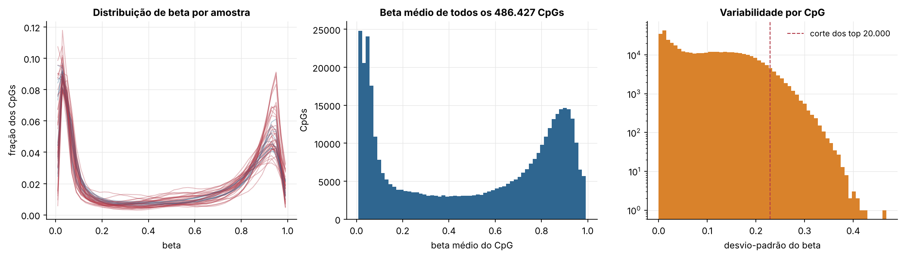
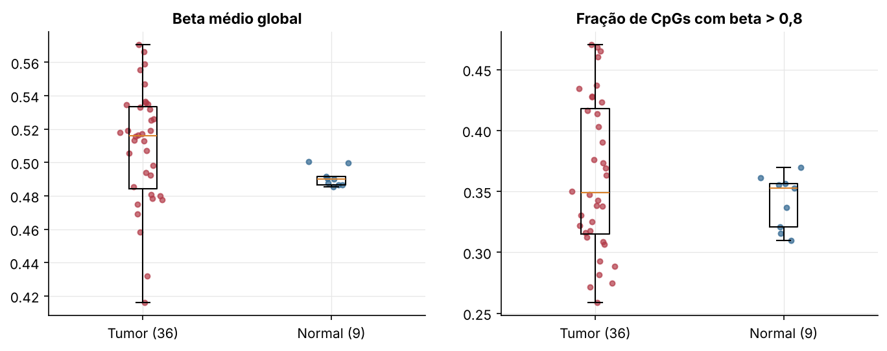
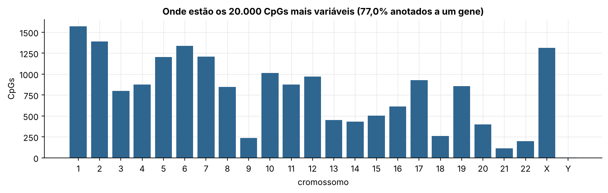
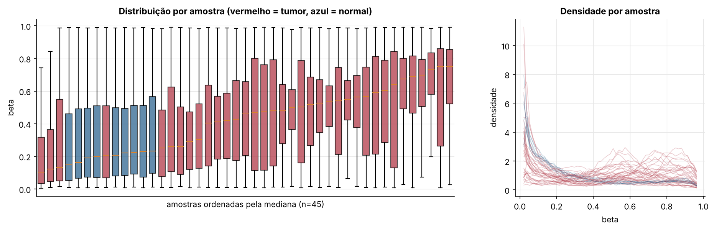
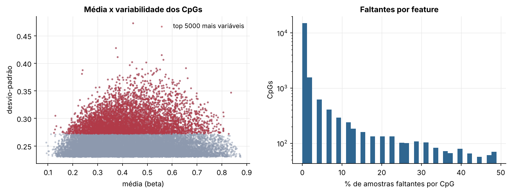
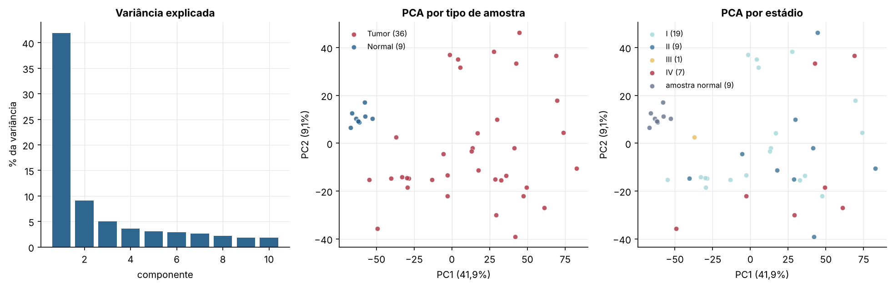
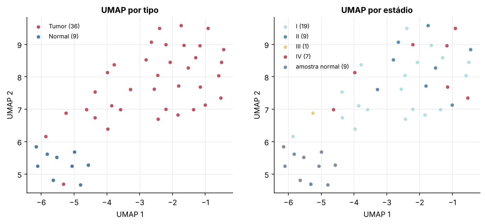
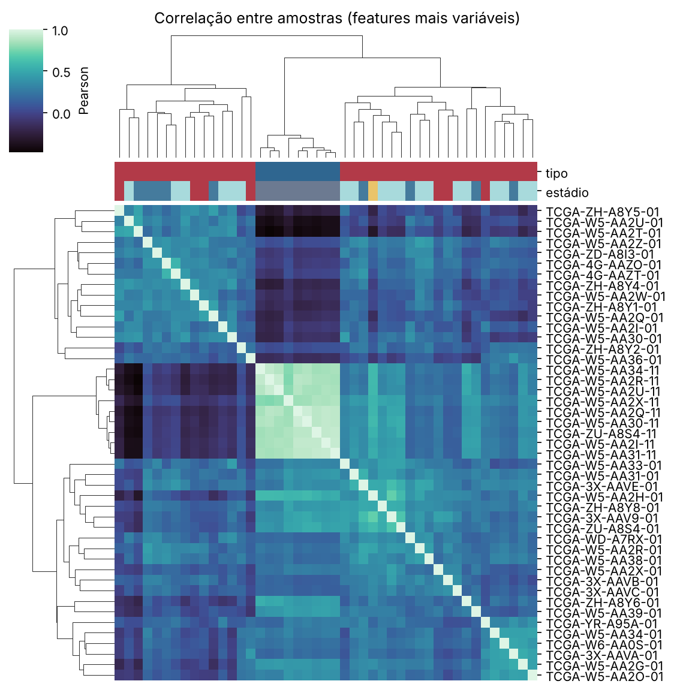
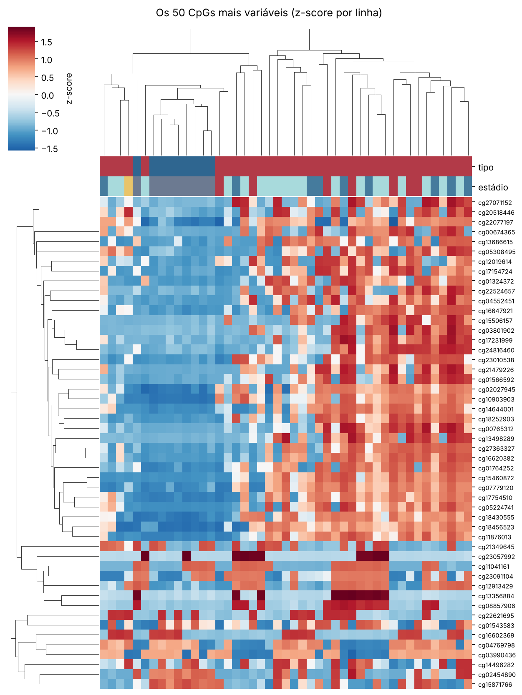
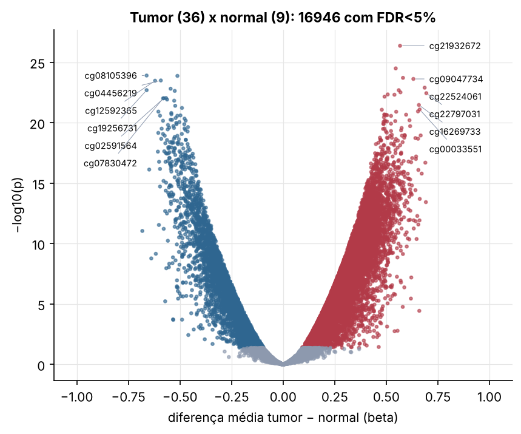

CHOL · Metilação do DNA (450k)
Illumina Infinium HumanMethylation450, valores beta (0 a 1) · gerado em 21/10/2026 19:04
486.427CpGs medidos
362.364CpGs sem faltante
20.000CpGs
36amostras tumorais
9amostras normais
3,1%valores faltantes
Fonte: GDC HM450 (SeSAMe, hg38) via arquivo do GDC hub
A API do Xena não respondeu; usei a metilação do GDC (processamento SeSAMe/hg38), não a versão PanCanAtlas.
O array tem ~485 mil CpGs. Para não ocupar espaço, guardamos estatísticas de todos os CpGs e só os 20.000 mais variáveis para PCA, UMAP e heatmaps.
Principais resultados
- A distribuição de beta é bimodal: a maioria dos CpGs está quase toda desmetilada (perto de 0, típico de ilhas CpG em promotores) ou quase toda metilada (perto de 1, corpo gênico e regiões intergênicas). 31,3% dos CpGs têm beta médio intermediário (0,2 a 0,8).
- Beta médio global: 0,516 nos tumores e 0,490 nos normais (sem hipometilação global no tumor).
- 20.000 CpGs medidos em 45 amostras (36 tumorais e 9 normais); 3,1% dos valores estão faltando.
- Os dois primeiros componentes principais explicam 41,9% e 9,1% da variância das features mais variáveis.
- Correlação mediana entre amostras: 0,21.
- Tumor x normal: 16946 CpGs diferentes com FDR < 5% (13155 maiores no tumor, 3791 maiores no normal; 9 pacientes têm o par tumor-normal).
- Mais aumentados no tumor: cg21932672, cg16676292, cg26940479, cg09047734, cg22524061, cg21178851, cg10061770, cg22797031.
- Mais reduzidos no tumor: cg08105396, cg19790294, cg04456219, cg12592365, cg05671644, cg19256731, cg05799169, cg19664267.
- Nenhum dos três primeiros componentes principais se associou a estádio, sexo, idade ou sobrevida com p < 0,05.
Distribuição global



Exploração dos CpGs mais variáveis
Distribuição dos valores


Estrutura das amostras




Tumor x normal

Features mais diferentes entre tumor e normal
| diferenca_tumor_menos_normal | t | p | fdr | |
|---|---|---|---|---|
| cg21932672 | 0.567 | 27.711 | 4.33e-27 | 8.65e-23 |
| cg16676292 | 0.546 | 25.003 | 3.21e-25 | 3.21e-21 |
| cg08105396 | -0.661 | -53.391 | 1.25e-24 | 6.69e-21 |
| cg19790294 | -0.512 | -22.736 | 1.34e-24 | 6.69e-21 |
| cg26940479 | 0.581 | 21.268 | 1.94e-24 | 7.78e-21 |
| cg09047734 | 0.631 | 21.664 | 2.39e-24 | 7.97e-21 |
| cg04456219 | -0.593 | -22.846 | 3.2e-24 | 8.4e-21 |
| cg12592365 | -0.621 | -21.489 | 3.36e-24 | 8.4e-21 |
| cg22524061 | 0.686 | 20.907 | 1.26e-23 | 2.81e-20 |
| cg05671644 | -0.545 | -20.996 | 1.55e-23 | 3.09e-20 |
| cg19256731 | -0.661 | -20.106 | 2.03e-23 | 3.4e-20 |
| cg21178851 | 0.56 | 24.274 | 2.04e-23 | 3.4e-20 |
| cg05799169 | -0.525 | -20.169 | 2.34e-23 | 3.59e-20 |
| cg10061770 | 0.569 | 25.896 | 3.07e-23 | 4.38e-20 |
| cg22797031 | 0.694 | 21.563 | 3.62e-23 | 4.82e-20 |
| cg07366553 | 0.507 | 20.553 | 4.6e-23 | 5.71e-20 |
| cg01661130 | 0.539 | 19.956 | 4.85e-23 | 5.71e-20 |
| cg27436184 | 0.492 | 19.6 | 6.99e-23 | 7.76e-20 |
| cg19664267 | -0.567 | -19.489 | 9.11e-23 | 9.25e-20 |
| cg02591564 | -0.578 | -19.548 | 9.42e-23 | 9.25e-20 |
| cg07830472 | -0.582 | -19.842 | 9.72e-23 | 9.25e-20 |
| cg14741228 | -0.562 | -19.125 | 1.21e-22 | 1.1e-19 |
| cg09218076 | -0.528 | -19.38 | 1.5e-22 | 1.31e-19 |
| cg16269733 | 0.658 | 19.951 | 3.42e-22 | 2.85e-19 |
| cg22776856 | -0.523 | -18.592 | 3.99e-22 | 3.19e-19 |
| cg00264419 | -0.49 | -18.348 | 6.02e-22 | 4.63e-19 |
| cg00033551 | 0.662 | 19.796 | 8.04e-22 | 5.95e-19 |
| cg26149682 | 0.478 | 19.061 | 8.49e-22 | 6.06e-19 |
| cg24887265 | 0.654 | 18.57 | 1.16e-21 | 7.98e-19 |
| cg08843517 | -0.604 | -18.431 | 1.21e-21 | 7.99e-19 |
Associação com variáveis clínicas
p-valores da associação dos três primeiros componentes principais (só tumores) com estádio (Kruskal-Wallis), sexo (Mann-Whitney), idade (Spearman) e sobrevida global (Cox univariado).
| estádio (Kruskal) | sexo (Mann-Whitney) | idade (Spearman) | sobrevida OS (Cox) | |
|---|---|---|---|---|
| PC1 (32,8%) | 0.246 | 0.435 | 0.424 | 0.897 |
| PC2 (10,4%) | 0.128 | 0.123 | 0.216 | 0.894 |
| PC3 (5,3%) | 0.986 | 0.05 | 0.117 | 0.949 |